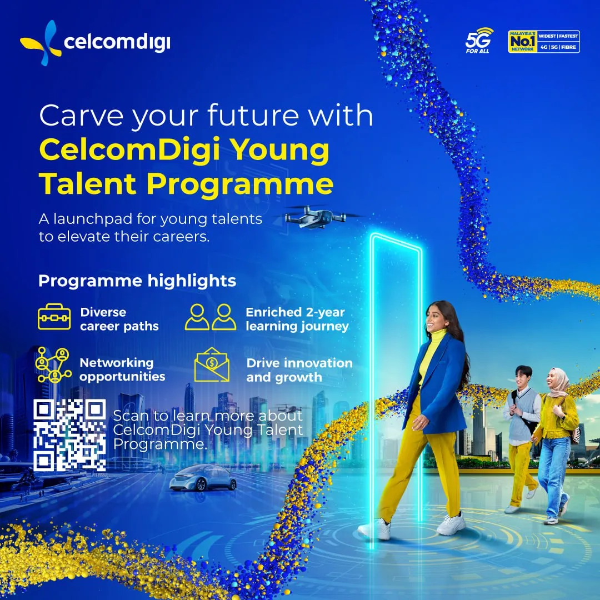

professional development.
The CelcomDigi Young Talent Programme is a 2-year initiative designed to cultivate the next generation of leaders in the telco-tech industry. It offers young Malaysians a unique opportunity to gain real-world experience, receive mentorship from industry experts, and work on innovative projects that shape Malaysia's digital future.

key programme highlights.
- Diverse Career Paths: Participants can choose specialized competency streams.
- Enriched Learning Journey: Comprehensive learning experience with cutting-edge tools and knowledge.
- Networking Opportunities: Connect with industry leaders and build professional relationships.
- Drive Innovation and Growth: Work on real-world projects and solve industry challenges.
key takeaways.
- Telco-Tech Focus: Exposure to 5G, AI, cloud computing, and cybersecurity
- Career Development: Gain skills that accelerate career growth in specialized fields.
- Industry Challenges: Practical problem-solving experience with real-world challenges.
eligibility.
The program is for Malaysians aged 25 or below in 2025, fresh graduates or those with less than 2 years of work experience, and holding a minimum degree in a relevant discipline. The CelcomDigi Young Talent Programme offers a transformative experience for young, ambitious individuals seeking to make a significant impact in the telco-tech industry.
programme poster.
